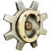
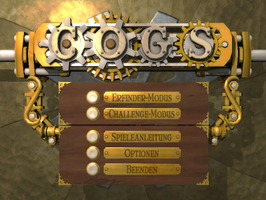
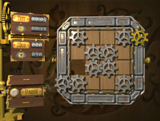
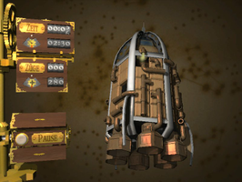

Cogs
Dieser Artikel wurde für die folgenden Ubuntu-Versionen getestet:
Ubuntu 14.04 Trusty Tahr
Zum Verständnis dieses Artikels sind folgende Seiten hilfreich:

Cogs  ist ein kommerzielles Puzzlesspiel in dem man in drei Dimensionen denken muss. Durch das geschickte Verschieben von Zahnrädern, Rohrstücken und anderen mechanischen Bauteilen werden unterschiedlichste Maschinen in Betrieb genommen.
ist ein kommerzielles Puzzlesspiel in dem man in drei Dimensionen denken muss. Durch das geschickte Verschieben von Zahnrädern, Rohrstücken und anderen mechanischen Bauteilen werden unterschiedlichste Maschinen in Betrieb genommen.
In den zwei Spielmodi bringen unter anderem 50 abwechslungsreiche Level im Erfinder-Modus die grauen Zellen des Spielers auf Touren. Der Schwierigkeitsgrad steigt kontinuierlich an. Im Challenge-Modus können weitere Herausforderungen, z.B. Level mit maximal 10 Zügen lösen, die Gehirnwindungen zum Glühen bringen...
|  |
| Hauptmenü |
|  |
| Spieleszene |
|  |
| 3D |
Installation¶
Desura¶
Das Spiel kann über die Internetseite oder den Client zur Spieleliste hinzugefügt und gestartet werden [6].
Humble Indie Bundle #3¶
Das Paket cogs-installer-build4 aus der Aktion Humble Indie Bundle ausführbar [1] machen. Anschließend startet man die Installation des Spiels mit Root-Rechten [2] [3]. Das Spiel in das Homeverzeichnis, z.B. nach ~/Spiele/Cogs, installieren:
sudo ./cogs-installer-build4
Um das Spiel zu starten in das Installationsverzeichnis wechseln und dieses über Cogs aufrufen [4]. Auf Wunsch kann man einen Menüeintrag [5] vornehmen.
Nach dem ersten Start wird im Homeverzeichnis der versteckte Ordner ~/.local/share/Cogs/ angelegt.
Spiel¶
Anleitung¶
Diese ist im Hauptmenü von Cogs unter "Spielanleitung" einsehbar. Hier werden die wichtigsten Funktionen sowie die Steuerung des Spiels erklärt. Vorher muß ggf. die Sprache auf Deutsch umgestellt werden.
Steuerung¶
Das Spiel wird mit der Maus gesteuert. Mit der  linken Maustaste werden die Bauteile verschoben. Mit der gedrückten
linken Maustaste werden die Bauteile verschoben. Mit der gedrückten  rechten Maustaste kann durch Bewegung der Maus die Ansicht verändert werden. Alternativ kann hier auch die Kombination
⇧ + verwenden.
rechten Maustaste kann durch Bewegung der Maus die Ansicht verändert werden. Alternativ kann hier auch die Kombination
⇧ + verwenden.
Optionen¶
Unter "Options" können Einstellungen zum Spiel vorgenommen werden. Neben der Musik und den Soundeffekten können grafische Effekte (de)aktiviert und von Vollbild auf Fenstermodus umgeschaltet werden.
Hinweis:
Über "Options -> More" kann die Spielsprache auf Deutsch umgestellt werden. Hier ist ein Neustart des Spiels erforderlich, damit die Änderungen wirksam werden.
Deinstallation¶
Tastenkürzel¶
| Tastenkürzel | |
| Taste(n) | Funktion |
| Bauteile verschieben. |
|
⇧ + | Objekt drehen - Maus dabei bewegen. |
| |
Infobox¶
| Cogs | |
| Originaltitel: | Cogs |
| Genre: | Puzzle |
| Sprache: |     |
| Veröffentlichung: | 2009 |
| Publisher: | lazy8studios |
| minimale Systemvoraussetzungen: | Athlon®- / Pentium®- mit 1.5 GHz / 512 MB RAM / 120 MB Festplattenspeicher / 64 MB 3D-Grafikkarte |
| Medien: | Download |
| Strichcode / EAN / GTIN: | - |
| Läuft mit: | nativ |
- Erstellt mit Inyoka
-
 2004 – 2017 ubuntuusers.de • Einige Rechte vorbehalten
2004 – 2017 ubuntuusers.de • Einige Rechte vorbehalten
Lizenz • Kontakt • Datenschutz • Impressum • Serverstatus -
Serverhousing gespendet von